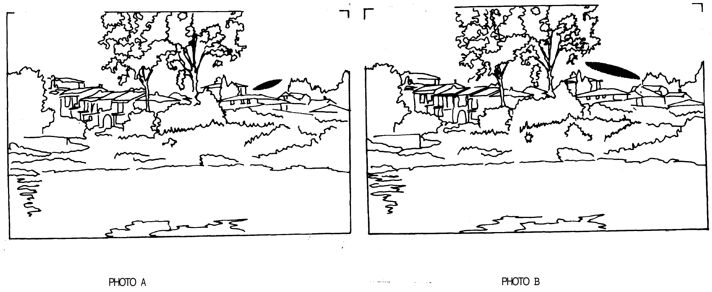

Annexe 1.A : Panneaux 3 et 4 - Questionnaire
Photos A et B.- De ces deux phénomènes lumineux, lequel vous semble être le plus proche du photographe ?
Photo C.- A quelle distance du photographe pensez-vous que se trouve ce phénomène lumineux ?
- environ 10 m ☐
- environ 100 m ☐
- environ 500 m ☐
- ou plusieurs kilomètres ☐
Photo D et E.- De ces deux phénomènes lumineux, lequel vous semble être le plus éloigné du photographe ?
Photo F et G.- A votre avis, que représente la photo F ?
……………………………………
Et la photo G ?
……………………………………
Nous vous remercions de votre aimable collaboration.
Annexe 1.B : Commentaires sur les photos des panneaux 3 et 4
1.- Le phénomène lumineux de la photo Ⓐ se trouve à la même distance que celui de la photo Ⓑ.
Pourtant la plupart des personnes estime que celui de la photo A est le plus proche du photographe.
D'une manière générale, un phénomène lumineux inconnu situé dans le ciel donne l'impression d'être plus loin
que s'il passe devant un obstacle.
2.- Le phénomène lumineux de la photo Ⓒ se trouve à une centaine de mètres du photographe.
Cependant un nombre non négligeable de personnes l'estime à proximité de la voiture.
Souvent la distance d'un phénomène lumineux inconnu est assimilée à celle de l'obstacle le plus proche dans
la même direction.
Dans le cas d'une voiture, cette tendance peut être renforcée par certaines idées couramment répandues à propos de
ces phénomènes.
3.- Les deux phénomènes lumineux sont à la même distance du photographe. Mais le phénomène de la photo Ⓔ semble
être le plus éloigné, simplement parce qu'il a une plus petite taille.
En général un phénomène lumineux inconnu paraît d'autant plus proche que sa taille apparente est plus
grande.
4.- La photo Ⓕ représente un nuage
lenticulaire photographié au soleil couchant.
La photo Ⓖ représente un hélicoptère, tous
feux allumés, évoluant près du sol.
D'une manière générale, lorsque l'on observe un phénomène lumineux inconnu, il est très difficile d'évaluer
correctement sa taille, sa distance et sa vitesse.
La recherche sur ces phénomènes est d'autant plus difficile à développer.
Dans la pratique, il est préférable de fixer son attention sur la taille apparente (que l'on peut évaluer
par comparaison avec un objet tenu à bout de bras) et de remarquer s'il se situe devant des obstacles.
Cela permet de calculer une distance maximale, et une taille réelle approximative.
Annexe 3.A
Annexe 3.A. Reproduction simplifiée de la partie supérieure du deuxième panneau. (Les photos réelles
sont en couleur et les phénomènes lumineux avec des contours imprécis)

Le témoignage humain peut-il être toujours objectif ?
- De ces deux phénomènes lumineux, lequel vous semble être le plus proche du photographe ?Les deux
photos de ce panneau sont légendées « Photo A » et « Photo B » dans la reproduction, mais correspondent à l'item
« DE » du questionnaire (annexe 1.A) et de la description du matériel, dont la
question porte sur le phénomène « le plus éloigné ».